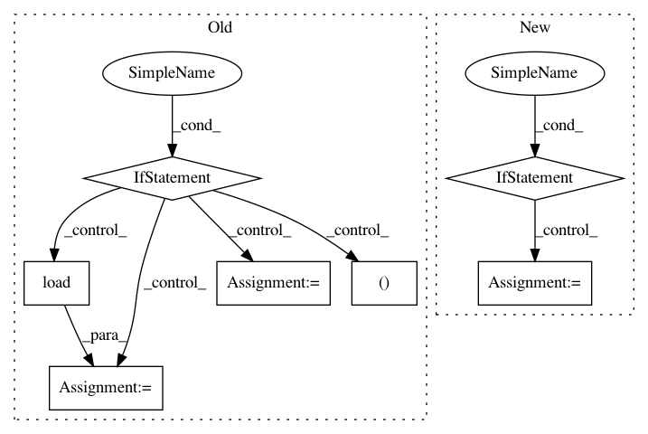

5cb31b24772202d34175b7c7f42c6b1792dd6dd4,snips_nlu/preprocessing.py,,language_stems,#Any#,11
Before Change
def language_stems(language):
global _LANGUAGE_STEMS
if _LANGUAGE_STEMS is None:
_LANGUAGE_STEMS = dict()
stems_paths = glob.glob(os.path.join(RESOURCES_PATH, "stems_*.json"))
for path in stems_paths:
_, filename = os.path.split(path)
lang = os.path.splitext(filename)[0].split("_")[-1]
with io.open(path, encoding="utf8") as f:
_LANGUAGE_STEMS[lang] = ujson.load(f)
return _LANGUAGE_STEMS[language.iso_code]
def stem(string, language, *default):
After Change
def language_stems(language):
global _LANGUAGE_STEMS
if language.iso_code not in _LANGUAGE_STEMS:
_LANGUAGE_STEMS[language.iso_code] = verbs_stems(language)
return _LANGUAGE_STEMS[language.iso_code]
def stem(string, language, *default):
In pattern: SUPERPATTERN
Frequency: 3
Non-data size: 7
Instances
Project Name: snipsco/snips-nlu
Commit Name: 5cb31b24772202d34175b7c7f42c6b1792dd6dd4
Time: 2017-03-31
Author: adrien.ball@snips.net
File Name: snips_nlu/preprocessing.py
Class Name:
Method Name: language_stems
Project Name: pyannote/pyannote-audio
Commit Name: b0a78567606a3ff24437501fc83239181b9478b3
Time: 2019-02-28
Author: pavel.korshunov@idiap.ch
File Name: pyannote/audio/features/utils.py
Class Name:
Method Name: read_audio
Project Name: nipy/dipy
Commit Name: 1fc54fd0060ba22783727bb92f414fce7b36fbec
Time: 2010-12-18
Author: garyfallidis@gmail.com
File Name: dipy/reconst/gqi.py
Class Name: GeneralizedQSampling
Method Name: __init__